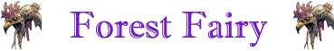
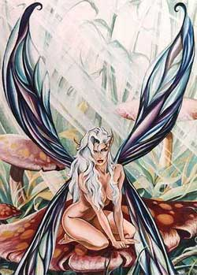

| Climate/Terrain | Any deep forest |
| Frequency | Rare |
| Organization | Solitary |
| Activity Cycle | Day |
| Diet | Omnivorous |
| Intelligence | Exceptional (16) |
| Treasure | Nil |
| Alignment | Neutral Good |
| No. Appearing | 1 |
| Armor Class | 3 |
| Movement | Fl. 18 |
| Hit Dice | 2 |
| Thac0 | 19 |
| No. of Attacks | 1 tocco elettrico |
| Damage / Attacks | 1 - 4 + 1 |
| Special Attacks | Vedi sotto |
| Special Defenses | Vedi sotto |
| Magic Resistance | Nil |
| Size | T (20 cm. alta) |
| Morale | Elite (13 - 14) |
| XP value | 420 |
Le piccole fate del bosco sono creature sacre alla dea Arlinir. Sono bellissime fate alte circa 20 cm. con delle ali morbide come la seta. Vivono nei boschi più profondi e si sa ben poco sul loro ciclo vitale. L'unica notizia certa è che non sopravvivono in ambienti chiusi o qualora vengano in qualsiasi modo private della libertà. Se sono impossibilitate a girare libere per i boschi senza alcun vincolo cadono in depressione dopo il primo giorno per poi morire dopo altri 1-4 giorni.
Combat
Le fatine sono creature estremamente buone, ma sono comunque in grado di difendersi quando occorre sebbene, data la loro fragilità preferiscono fuggire.
Comunque le fatine possono concentrare energia magica nel loro mani e al tocco liberare una forte scintilla, qualora colpiscano il bersaglio produrranno 1-4+1 danni da elettricità.
Le fatine del bosco possono divenire invisibili a piacere concentrandosi per un round (alla fine del quale saranno divenute invisibili, la loro invisibilità vale anche nei confronti degli animali). Inoltre volano ad alta velocità e con incredibile destrezza, questo fa si che sia abbastanza difficile colpirle, tutte le creature di dimensioni H o G hanno una penalità di -2 a tutti i tiri per colpire contro la fatina. Inoltre sono totalmente silenziose nei loro movimenti.
Le fatine possono parlare telepaticamente e sempre con le creature del bosco che siano normali animali. Utilizzano spesso questo potere per avvisare gli animali di pericoli a cui questi possono andare incontro.
Inoltre le fatine possono decidere di emanare un alone luminoso, quando decidono di fare questo il loro copro inizia ad emettere una intensa luce dal colore verde chiaro che illumina chiaramente a 1 metro di distanza dalla fatina (occorre che la fatina si concentri per un round alla fine del quale sarà luminosa). L'utilizzo di questo potere non procura alcuno sforzo alla fatina che può mantenerlo anche per ore, la rende però molto visibile e le impedisce di divenire invisibile.
Le fatine sono creature magiche e sono dotate di poteri magici che possono utilizzare alcune volte al giorno, come un chierico del 3° livello :
3/day Faerie Fire (Priest Spell 1st level, Player's Handbook)
1/day Entangle (Priest Spell 1st level, Player's Handbook)
2/day Detect Evil (Priest Spell 1st level, Player's Handbook)
Habitat/Society
Le fatine sono creature incantate delle foreste. Si incontrano sempre da sole, anche se il più delle volte sono loro a presentarsi agli esploratori. Appena percepiscono l'arrivo di una creatura, infatti, diventano invisibili e ne osservano i movimenti, se si rendono conto che la creatura è buona ed è per loro interessante si faranno vedere per scambiare qualche parola e magari dare dei consigli, se invece si rendono conto che si tratta di creature malvagie, avviseranno gli animali della zona ed eventualmente le creature intelligenti di cui si fidano e cercheranno, senza mettere in pericolo la propria vita, di evitare che costoro compiano azioni malvagie.
Le fatine hanno una particolare predilezione per i druidi, gli elfi e i ranger. Spesso si trovano in compagnia di costoro.
Nemici giurato delle fatine sono i troll, queste malvagie creature della foresta ritengono che porti una immensa fortuna cibarsi di una fatina e non esitano ad attaccarle quando possono.
Ecology
Non si hanno molte notizie sull'ecologia delle fatine, si dice si nutrano esclusivamente di miele o pappa reale. Svolgono un importante ruolo all'interno delle foreste mettendo in comunicazione fra loro gli animali e proteggendo le creature della foresta.
Mystical Resource Sourge
(Ali) Quantità: 2, Presenza 30% - Scuola di Magia:
Enchantment
- Qualità della Risorsa:
Common.
Mystical Resource Sourge
(Cuore) Quantità: 1, Presenza 25% - Scuola di Magia:
Illusion
- Qualità della Risorsa: Uncommon.